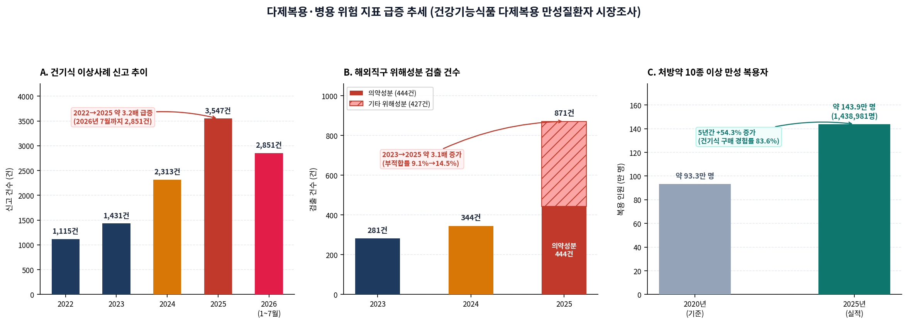

건강기능식품 다제복용 만성질환자 고충 시장조사
다제복용 만성질환자의 약·건기식 병용 고충과 1인 분석가의 공개데이터 전략
0. 관점 주체
고충은 먼저 다제복용 만성질환자 관점에서 깊게 조사합니다(1~4장). 그 고충을 풀려면 어떤 데이터가 필요한지 정하고(5장), 그 데이터를 채울 공개 데이터셋을 찾아 목록으로 만듭니다(6장). 접근 가능성·확보 가능성·1인 구현 제약을 이어서 평가하고(7장), 그 결과로 분석작업 우선순위를 정합니다(8장).
대상 규모는 작지 않습니다. 처방약을 10종 이상 만성 복용하는 사람은 2025년 143만8981명(2020년 대비 54.3% 증가)이고, 질환별로는 당뇨병 53만8886명, 고혈압 49만9875명 순입니다. 같은 해 건기식 구매 경험률은 83.6%로 최근 5년 중 가장 높았습니다.

1. 고충 분류 방식
환자의 고충을 건기식 하나가 환자의 하루에 들어오는 순서로 나눴습니다. 고르고, 이미 먹는 약과 맞추고, 매일 먹고, 탈이 났는지 점검하는 네 단계는 서로 겹치지 않고, 합치면 병용 과정 전체를 포괄합니다.
| 단계 | 핵심 질문 | 무엇을 잃는가 |
|---|---|---|
| A. 고르기 (선택·구매) | 이 제품은 믿을 만한가, 나에게 필요한가 | 안전(위해성분), 돈 |
| B. 맞추기 (조합 대조) | 내가 먹는 처방약과 성분이 겹치거나 충돌하는가 | 안전(중복·상호작용), 대조 시간 |
| C. 먹기 (복용 일정) | 언제, 얼마나, 무엇과 간격을 두고 먹는가 | 복약 일관성, 약효 |
| D. 점검하기 (이상·변경 대응) | 이상이 생기거나 정보가 바뀌면 알아채고 대응할 수 있는가 | 안전(발견 지연), 진료 시간 |
우선순위는 네 가지 기준으로 매겼습니다.
- 범위: 얼마나 많은 환자가 겪는가
- 크기: 피해의 심각도나 금액·시간이 얼마나 되는가
- 추세: 앞으로 나빠지는가
- 통제 불가성: 환자 혼자 해결할 수 없는가
2. 우선순위 요약
| 순위 | 고충 | 범위 | 크기 | 추세 | 통제 불가성 | 근거 요약 |
|---|---|---|---|---|---|---|
| 1 | B. 내 약과 맞추지 못함 | 10종 이상 복용자 143.9만 명 거의 전부 | 큼 (스타틴 중복, 출혈) | 악화 | 매우 높음 | 약과 함께 먹어도 되는지 전문가와 상의한다는 응답 60%. DUR에 건기식 없음 |
| 2 | A. 믿을 제품을 고르지 못함 | 구매자 대부분, 직구·만성질환 표방 제품에 집중 | 큼 (의약성분 혼입) | 빠르게 악화 | 높음 | 직구 위해성분 검출 2023년 281건 → 2025년 871건 |
| 3 | D. 이상·변경을 늦게 앎 | 이상을 겪은 환자 + 다제약물 고위험군 | 중간~큼 | 급격히 악화 | 높음 | 이상사례 신고 2022년 1115건 → 2025년 3547건, 다제약물 관리 이용률 0.8% |
| 4 | C. 복용 일정이 감당 안 됨 | 고령 다제복용자 중심 | 중간 | 악화 | 중간 | 장기 고위험군 1인당 처방약 14.3개, 여기에 건기식이 더해짐 |
1위와 2위의 차이는 근소합니다. B가 1위인 이유는 범위가 가장 넓고, 환자가 원료명과 약 성분명을 스스로 대조할 방법이 거의 없기 때문입니다. C는 환자와 가족이 약통·복약 달력으로 어느 정도 줄일 수 있어 통제 불가성이 가장 낮습니다.
향후 1~2년 순위 변화: 현재 체감은 B가 가장 크지만, 증가 속도는 D가 가장 빠릅니다. 이상사례 신고는 3년 사이 약 3.2배로 늘었고, 2026년에는 7월까지만 2851건이 접수됐습니다. 85세 이상 10종 이상 복용자도 5년 사이 2.2배로 늘어, 이상이 생겨도 원인을 찾기 어려운 환자가 빠르게 늘고 있습니다. 이 추세가 이어지면 2027~2028년에는 D가 A를 넘어 2위가 될 가능성이 높습니다. 2027년 기능성 원료 10종 재평가처럼 주의사항이 바뀌는 일도 매년 생기므로 D의 문제는 구조적으로 커집니다.
3. 단계별 고충과 구체적 사례
순위 순서(B → A → D → C)로 적었습니다.
B. 맞추기: 내 약과 건기식을 대조하지 못함 (1위)
왜 1위인가
- 범위: 처방약 10종 이상 복용자는 2025년 143만8981명이고, 5종 이상은 653만1224명입니다. 건기식 구매 경험률 83.6%를 감안하면 대부분이 병용자입니다.
- 확인 행동의 공백: 2024년 한국리서치 조사(1000명)에서 “약과 함께 먹어도 되는지 의사·약사와 상의한다”는 응답은 60%로, 인증마크 확인(78%)보다 낮았습니다. 처방약을 먹는 만성질환자 146명 설문에서는 72%가 건기식을 약국 밖에서 샀고, 대부분 상호작용 검토 없이 먹고 있었습니다.
- 시스템의 공백: DUR은 의약품 처방·조제 시스템이라 건기식이 들어갈 자리가 없습니다. 의약품끼리의 경고조차 처방 변경으로 이어진 비율은 2018년 기준 약 12.0%였습니다.
사례 B-1. 스타틴을 먹으면서 ‘콜레스테롤 개선’ 홍국 제품을 더 먹는다
- 상황: 홍국의 주성분 모나콜린K는 전문의약품 로바스타틴과 같은 물질이고, 홍국 1.2~2.4g에 약 5mg이 들어 있습니다. 약사들은 고지혈증약을 먹는 중에는 홍국을 피하라고 안내합니다. 그런데도 2026년 4월 한 비대면 진료 플랫폼에는 고혈압·고지혈증약 복용자가 은행잎·홍국·코엔자임Q10이 함께 든 복합 제품을 먹어도 되는지 묻는 글이 올라왔습니다. 고콜레스테롤혈증 유병률은 2016년 16.7%에서 2025년 24.5%로 늘어, 이런 질문을 할 사람도 늘고 있습니다.
- 제약조건 1 (표기 체계 차이): 처방약은 성분명(아토르바스타틴 등)이나 상품명으로, 건기식은 원료명(‘홍국’)으로 적힙니다. 두 이름이 같은 계열이라는 사실은 포장 어디에도 없습니다.
- 제약조건 2 (복합 제품): 홍국이 다른 원료 6~7가지와 섞여 있으면, 환자는 제품명만 보거나 기타 원료까지는 읽지 않습니다.
사례 B-2. 항혈전제를 먹는 사람이 오메가3·인삼을 함께 먹는다
- 상황: 식약처는 의약품과 병용을 주의해야 하는 건기식 성분 27종을 안내하고 있습니다. 예를 들어 EPA·DHA 제품은 아스피린 같은 항혈전제와, 인삼은 항응고제와 함께 먹지 말라고 하고, 밀크씨슬은 약의 분해 속도를 늦출 수 있다고 안내합니다.
- 제약조건 1 (약효군 단어): 주의사항은 ’항혈전제’처럼 약효군으로 쓰여 있습니다. 환자는 자기가 먹는 약이 항혈전제인지 모르는 경우가 많습니다.
- 제약조건 2 (다기관 처방 분절): 혈압약은 내과, 항혈전제는 심장내과, 혈당약은 또 다른 의원에서 받으면 어느 한 곳도 환자가 먹는 건기식을 물어볼 책임이 없습니다.
사례 B-3. 같은 영양소를 여러 제품으로 겹쳐 먹는다
- 상황: 종합비타민, 비타민D 단일제, 칼슘·마그네슘 복합제를 함께 먹으면 같은 성분이 겹쳐 1일 섭취량 상한을 넘길 수 있습니다. 식약처 품목분류정보(I2710)에는 성분별 상·하한이 있지만, 제품을 합산해 주는 공공 도구는 없습니다.
- 제약조건 1 (단위 혼재): 비타민D는 μg과 IU로, 지표성분은 mg/g으로 적혀 있어 환자가 직접 더하려면 환산부터 해야 합니다.
- 제약조건 2 (인지 부담): 5년 내내 10종 이상을 먹은 65세 이상 26만3862명은 1인당 처방약이 14.3개입니다. 여기에 건기식 성분까지 더해 암산하는 것은 현실적으로 불가능합니다.
A. 고르기: 믿을 제품을 가려내지 못함 (2위, 빠르게 악화)
왜 2위인가
- 크기: 해외직구 식품 위해성분 검출은 2023년 281건, 2024년 344건, 2025년 871건으로 늘었고 부적합률도 9.1% → 14.5%로 올랐습니다. 2025년 871건 중 444건이 의약성분이었습니다.
- 채널: 건기식 매출의 71%가 인터넷몰이고 약국은 4.5%입니다. 구매 전 정보를 찾는다는 소비자는 89.8%이지만, 가장 많이 쓰는 경로는 포털(46.4%), 지인 추천(26.7%), 온라인 커뮤니티(25.7%)입니다.
- 2위인 이유: 피해는 크지만 위해성분이 직구·다이어트·성기능 표방 제품에 몰려 있어, 국내 정식 제품만 사는 환자는 영향이 작습니다.
사례 A-1. ‘혈압·혈당 개선’ 직구 제품에 의약성분이 들어 있다
- 상황: 2025년 5월 식약처가 만성질환 개선을 표방한 해외직구 제품 45개를 사서 검사했더니 22개에서 국내 반입차단 대상 원료·성분이 나왔습니다. 멜라토닌, L-도파, 5-HTP, 리튬 등 17개 의약성분은 최근 3년 내내 검출됐습니다.
- 제약조건 1 (검사 밖 유통): 정식 수입식품과 달리 개인 직구 제품은 국내 검사를 거치지 않습니다. 위해성분이 검출된 제품의 79.3%가 미국산이었는데, 아마존·이베이 등 대형몰을 통한 유통이 많기 때문입니다.
- 제약조건 2 (명칭 대조): 차단 목록은 식품안전나라에 공개되지만, 환자가 영문 제품명·판매처명을 일일이 대조해야 합니다.
사례 A-2. 홍국 사태: 같은 원료를 쓴 제품을 소비자가 스스로 찾을 수 없었다
- 상황: 2024년 3월 일본 고바야시제약의 ‘홍국 콜레스테 헬프’ 섭취 후 사망 5명, 입원 114명이 보고됐습니다. 일본 정부가 발표한 자진회수 제품은 54개사 150여 개였습니다. 식약처는 국내 정식 수입이 없었다고 밝혔고, 관세청은 해외직구 반입을 막았습니다.
- 제약조건 1 (원료 공급사 비공개): 라벨에는 원료명만 있고 어느 회사 원료인지는 없습니다. 식약처가 수입자에게 수입할 때마다 고바야시 원료가 아니라는 증명을 요구한 것도 이 때문입니다.
- 제약조건 2 (국가별 제도 차이): 홍국은 국내에서도 ‘혈중 콜레스테롤 개선’ 기능성을 인정받은 원료입니다. 미국 FDA는 1998년 모나콜린K를 이유로 판매를 금지했습니다. 같은 원료가 나라마다 다르게 취급되니 직구로 사는 환자는 기준을 잡기 어렵습니다.
사례 A-3. 광고를 보고 산 제품이 내 질환에 오히려 해롭다
- 상황: 한 약사는 당뇨로 신장투석을 받는 환자가 ’혈관을 뚫어준다’는 광고를 보고 고함량 아르기닌을 결제한 뒤에야 약국에 왔다고 전했습니다(2023년 보도).
- 제약조건 (정보 비대칭): 광고는 기능성 문구만 강조할 뿐, 환자의 신장 기능이나 처방은 고려하지 않습니다. 구매 채널 71%가 인터넷몰이라 결제 전에 전문가를 만날 접점이 없습니다.
D. 점검하기: 이상과 정보 변경을 늦게 앎 (3위, 가장 빠르게 악화)
왜 3위인가
- 추세: 식약처 집계 건기식 이상사례 신고는 2022년 1115건, 2023년 1431건, 2024년 2313건, 2025년 3547건입니다. 다이어트 건기식만 보면 2025년 60대 이상 신고가 279건으로 전년(77건)의 3배가 넘었습니다.
- 관리의 공백: 건보공단 다제약물 관리사업의 서비스를 받은 사람은 2025년 1만1613명으로, 10종 이상 복용자의 0.8%입니다.
- 3위인 이유: 아직 이상을 겪은 환자만 체감하지만, 증가 속도가 가장 빠릅니다.
사례 D-1. 포장에 적힌 이름으로 이상사례를 신고할 수 없다
- 상황: 식약처 건기식 이상사례 온라인 신고 시스템에서는 품목제조보고상 제품명이 바뀌면 포장에 적힌 이전 이름으로 검색되지 않습니다. 담당자가 접수 후 수기로 대조합니다. 이름이 바뀌지 않은 제품도 ’등록된 제품이 없다’고 나오는 사례가 보도됐습니다.
- 제약조건 1 (명칭 이력 미연결): 변경 전·후 제품명을 잇는 정보가 소비자용 검색에 반영돼 있지 않습니다.
- 제약조건 2 (인과 판단 불가): 약을 10종 넘게 먹는 환자는 증상이 약 때문인지 건기식 때문인지 스스로 구분할 수 없습니다.
사례 D-2. 검사상 문제가 없던 제품이 갑자기 회수된다
- 상황: 2025년 9월 다이소 등에서 팔린 대웅제약 ‘가르시니아’ 섭취 후 서로 다른 2명에게 급성 간염 증상이 생겨 전량 회수됐습니다. 수거 검사에서 기준·규격 부적합은 없었고, 심의위원회는 인과 가능성이 매우 높다고 판단했습니다. 식약처는 2026년 가르시니아캄보지아 추출물 안전성 검토에 착수했습니다.
- 제약조건 (사후 공지): 회수·재평가 소식은 식약처 누리집에 올라오지만, 제품을 이미 산 사람에게 알려주는 경로는 없습니다. 2026년에는 영지버섯 자실체 추출물의 기능성이 건강기능식품 공전에서 삭제됐고, 2027년에는 빌베리 등 10종이 재평가됩니다.
사례 D-3. 약사가 찾아낸 문제가 처방에 반영되지 않는다
- 상황: 건보공단 요양시설 다제약물 관리에서 입소자의 37.7%가 10개 이상 약을 먹고 있었고, 약사의 처방조정 의뢰 664건 중 실제 반영은 209건(약 31%)이었습니다(2026년 국감).
- 제약조건 (결정권 분리): 처방 변경은 의사가 결정합니다. 문제를 찾는 사람과 바꿀 수 있는 사람이 다르고, 둘을 잇는 소통 경로가 약합니다.
C. 먹기: 복용 일정이 감당되지 않음 (4위)
왜 4위인가
- 범위: 처방약의 투약 기간·횟수를 지킨다는 응답은 87%로 높지만, 의사·약사에게 투약 방법을 적극적으로 묻는 사람은 55%입니다.
- 4위인 이유: 약통·복약 달력 등 환자와 가족이 쓸 수 있는 수단이 있어 통제 불가성이 가장 낮습니다.
사례 C-1. 메트포르민을 오래 먹어 비타민B12가 빠지는데 무엇을 보충해야 하는지 모른다
- 상황: 메트포르민은 회장의 B12 흡수를 막는 것으로 알려져 있고, 한 연구에서 복용자의 23.84%가 B12 결핍이었습니다. 한편 맞춤형 건기식 서비스 이용자 중 처방약을 먹는 1635명을 분석한 연구에서는 알고리즘 추천 후 97.3%가 약사 중재를 받았습니다. 즉, 필요한 영양소는 빠지고 불필요하거나 맞지 않는 제품은 더해지는 상황입니다.
- 제약조건 1 (책임 공백): 처방전과 복약안내에는 무엇을 보충해야 하는지가 나오지 않고, 건기식 판매처는 처방을 모릅니다.
- 제약조건 2 (검사 비용): 결핍 여부는 혈액검사로 확인해야 하는데, 환자가 스스로 요청하기는 어렵습니다.
사례 C-2. 시간·간격을 따지지 않고 한꺼번에 먹는다
- 상황: 처방약을 먹는 만성질환자 146명 설문에서 대부분이 처방약 복용과 건기식 섭취의 시간·용량을 검토하지 않고 있었습니다. 항생제와 프로바이오틱스처럼 간격을 두어야 하는 조합도 있습니다.
- 제약조건 (인지·시간 부담): 하루 14개 약을 아침·저녁으로 나눠 먹는 고령 환자에게 건기식마다 다른 섭취 방법을 더하면, 일정을 머리로 관리하기 어렵습니다.
4. 고충들간의 연결 구조
네 단계는 서로 겹치지 않지만, 앞 단계에서 걸러지지 않은 문제가 다음 단계로 넘어가며 커집니다.
- 고르기(A) → 맞추기(B): 상담 없는 채널(인터넷몰 71%)에서 기능성 문구만 보고 고르면, 환자 손에는 원료명만 적힌 제품이 남습니다. 대조해야 할 항목이 늘어납니다.
- 맞추기(B) → 먹기(C): 원료명과 약 성분명을 잇지 못하니 스타틴+홍국, 항혈전제+오메가3 같은 조합이 걸러지지 않은 채 매일의 복용 일정에 들어갑니다.
- 먹기(C) → 점검하기(D): 처방약 14개에 건기식이 더해지면 증상이 생겨도 원인을 가려낼 수 없습니다. 의료진의 기록에는 건기식이 없어 진료실에서도 추적되지 않습니다.
- 점검하기(D) → 다시 고르기(A): 원인을 모르는 증상을 해결하려고 환자는 또 다른 건기식을 찾습니다. 복용 목록은 길어지고 다음 대조는 더 어려워집니다.
근본적인 구조적 원인
- 정보가 세 곳으로 나뉘어 있습니다. 처방·조제 이력은 심평원 DUR에, 의약품 안전정보는 식약처 의약품안전나라에, 건기식 원료와 주의사항은 식품안전나라에 있고, 각각 다른 코드 체계를 씁니다. 개인의 건기식 섭취 이력은 어느 곳에도 없습니다.
- 제도가 두 갈래로 나뉘어 있습니다. 건기식은 식품이라 처방·조제 점검 대상이 아니고, 의약품 점검인 DUR도 경고 후 처방 변경률이 약 12%에 그칩니다.
- 시장이 상담 없는 쪽으로 움직입니다. 약국 판매 비중은 4.5%에 그치고, 직구 위해성분 검출은 3년 새 3.1배로 늘었습니다. 판매와 상담이 점점 멀어지고 있습니다.
근거의 한계
- 수치 상당수가 국정감사 제출 자료를 인용한 언론 보도입니다. 문제 제기가 목적인 자료라 증가세가 강조됐을 수 있습니다.
- 만성질환자 146명 설문과 1635명 분석은 건기식 서비스 기업의 연구입니다. 약사 상담의 필요성을 보여주는 쪽으로 쏠릴 수 있고, 표본도 작습니다.
- 이상사례 수치는 출처마다 다릅니다. 식약처 집계 2025년 3547건과 식품안전정보원 신고센터 집계 5250건은 집계 기준이 다른 것으로 보이며, 이 보고서는 앞의 값을 썼습니다. 신고는 인과가 확인된 건수가 아닙니다.
- 시점이 섞여 있습니다. 상호작용 검토 없이 먹는다는 설문은 2024년, DUR 처방 변경률 12%는 2018년 기준입니다. B12 결핍 비율은 해외 연구입니다.
5. 해결 범위와 필요한 데이터
고충 중 1인 분석가가 줄일 수 있는 것은 대조·점검에 드는 수고와 정보 격차입니다. 처방 결정이나 임상 판단은 범위 밖입니다. 가장 크게 줄일 수 있는 대상은 1위 고충 B이고, A와 D는 일부, C는 보조적으로만 다룹니다.
| 구분 | 내용 | 해당 단계 |
|---|---|---|
| 바꿀 수 없는 영역 | 처방 결정과 처방 변경, 임상 진단(이상 증상의 인과 판단, B12 결핍 여부), 개인별 실시간 복약 행동, 판매 채널·광고 규제 | A·C·D |
| 줄일 수 있는 손실 1 | 성분·효능·주의사항 대조 시간: 원료명(홍국, EPA·DHA)을 약 성분·약효군(스타틴, 항혈전제)과 이어주기 | B |
| 줄일 수 있는 손실 2 | 중복·주의 조합 사전 점검: 같은 영양소 합산, 1일 상한과 비교, 병용주의 원료 표시 | B |
| 줄일 수 있는 손실 3 | 공개 목록 대조: 고른 제품이 직구 차단·회수·재평가 대상인지 | A·D |
| 줄일 수 있는 손실 4 | 이해도 격차: 약사·의사에게 가져갈 한 장짜리 복용 목록과 질문 목록 | B·D |
서비스가 만들 수 있는 것은 “먹어도 된다”는 판정이 아니라 “이 조합은 약사에게 꼭 물어보라”는 근거 있는 질문입니다. 판정은 의·약사의 영역이고, 공개데이터에는 용량·신체 기능 같은 개인 조건이 없습니다.
고충별로 필요한 데이터
고충마다 해결에 필요한 정보를 먼저 정하고, 그 정보가 공개데이터에 있는지는 6장에서 찾습니다.
| 고충 | 해결에 필요한 정보 | 필요한 데이터 항목 |
|---|---|---|
| B. 맞추기 | 건기식 원료가 어떤 약 성분·약효군과 겹치거나 충돌하는지, 같은 영양소 합계가 상한을 넘는지 | 원료별 주의사항·1일 섭취량 상·하한, 의약품 성분·약효군, 원료–약물 상호작용 근거, 사용자의 복용 목록 |
| A. 고르기 | 제품에 실제로 무엇이 들었는지, 차단·위해 대상인지, 광고 기능성이 인정된 것인지 | 제품→원재료 목록, 바코드, 직구 위해식품 차단 목록, 인정 기능성 목록, 해외 제품 라벨 |
| D. 점검하기 | 먹는 제품·원료가 회수·재평가·차단에 올랐는지, 비슷한 이상사례가 쌓이는지 | 회수·판매중지 공표, 재평가 공고, 제품명 변경 이력, 원료별 이상사례 집계·원자료 |
| C. 먹기 | 언제, 무엇과 간격을 둬야 하는지, 오래 먹는 약이 어떤 영양소를 빼앗는지 | 의약품 용법·주의사항 텍스트, 약물 유발 영양 결핍 근거(문헌), 사용자의 복용 일정 |
| 공통 | 대상군이 얼마나 되고 얼마나 빨리 늘어나는지 | 만성질환 유병·다제약물 통계, 보충제 섭취 실태 |
6. 공개 데이터셋 탐색·목록
5장의 데이터 항목을 채울 수 있는 국내외 데이터셋 20개를 모았습니다. 접근 조건 중 ’확인 필요’는 신청 전에 다시 확인할 항목입니다.
| # | 데이터셋 (제공기관) | 담긴 내용 | 형태·갱신 | 접근 조건 | 채우는 고충 |
|---|---|---|---|---|---|
| 1 | DUR 성분정보·품목정보 OpenAPI (식약처) | 병용금기·효능군 중복·노인주의 성분 | API | 공공데이터포털 키 발급, 비상업 연구·교육용 (상업 이용은 사전 승인) | B |
| 2 | 의약품 제품 허가정보 (식약처) | 전문·일반의약품 성분, 효능, 용법, 주의사항 텍스트 | API | 공공데이터포털 키 발급 | B·C |
| 3 | e약은요 (식약처) | 일반의약품 쉬운 설명 | API | 공공데이터포털 키 발급 | B·C |
| 4 | 건강기능식품 품목분류정보 I2710 (식품안전나라) | 원료별 1일 섭취량 상·하한, 주의사항 | API, 최종수정 2020-06-17 표시 | 키 발급, 호출 제한(500) | B |
| 5 | 기능성 원료인정현황 I-0040, 개별인정형 정보 (식품안전나라) | 인정 원료, 기능성 문구, 주의사항 | API | 키 발급 | A·B |
| 6 | 건기식 품목제조신고(원재료) (식약처) | 제품별 원재료 목록 | API | 키 발급 | A·B |
| 7 | 바코드연계제품정보 (식약처) | 바코드 → 제품 | API | 키 발급, 일부 외부 연계 | A·B |
| 8 | 해외직구 위해식품 차단 목록 (식품안전나라) | 차단 제품명, 위해성분 | 웹 목록 (API 여부 확인 필요) | 공개 | A |
| 9 | 회수·판매중지 공표 (식품안전나라) | 회수 제품, 사유, 일자 | 게시판·API | 공개 | A·D |
| 10 | 기능성 원료 재평가 공고 (식약처) | 재평가·기능성 삭제 원료 | 보도자료, 비정형 | 공개 | D |
| 11 | 건기식 이상사례 신고 집계 (식약처·식품안전정보원) | 연도·연령·원료별 건수 | 국감·보도 수치, 연 1회 | 집계만 공개, 원자료 비공개 | D |
| 12 | 의약품 이상사례 보고 원시자료 (한국의약품안전관리원) | 의약품 이상사례 건별 자료 | 연 단위 파일 | 연구 목적 신청·심사 (확인 필요) | D |
| 13 | 국민건강영양조사 (질병관리청) | 만성질환 유병, 식이보충제 섭취 문항 | 연 1회 원시자료 | 회원가입·이용 신청 | 공통 |
| 14 | 건보 표본코호트, 심평원 환자표본자료 | 개인 단위 처방·진단 (건기식 없음) | 연 단위 | 심사·비용, 폐쇄망 분석 | 공통 |
| 15 | 다제약물 관리 통계 (건보공단 국감 제출) | 10종 이상 복용자 수, 관리 이용률 | 보도 수치 | 보도로만 공개 | 공통 |
| 16 | Dietary Supplement Label Database (미국 NIH ODS) | 미국 제품 라벨의 원료·함량 | API·다운로드 | 무료 공개 | A (직구 제품) |
| 17 | CAERS (미국 FDA) | 식품·건기식 이상사례 건별 자료 | 분기 파일 | 무료 공개 | D (참고) |
| 18 | FAERS (미국 FDA) | 의약품 이상사례, 병용 제품 기재 | 분기 파일 | 무료 공개 | D (참고) |
| 19 | NHANES 보충제·처방약 문항 (미국 CDC) | 보충제·처방약 병용 실태 | 2년 주기 | 무료 공개 | 공통 (해외 비교) |
| 20 | DrugBank, Natural Medicines | 원료–약물 상호작용 근거·심각도 | DB | DrugBank 학술 라이선스 신청, Natural Medicines 유료 | B |
개인이 실제로 무엇을 먹는지는 이 목록 어디에도 없습니다. 처방 이력은 심평원 ’내가 먹는 약! 한눈에’에서 본인만 조회할 수 있고, 비급여로 사는 건기식 섭취 이력은 어떤 공공 시스템에도 쌓이지 않습니다. 따라서 이 보고서의 서비스는 사용자가 직접 입력한 약·건기식 목록을 공개 기준정보와 대조해 주는 도구를 전제로 합니다.
7. 접근 가능성·확보 가능성·1인 구현 제약 평가
5장의 데이터 항목마다 6장의 데이터셋을 붙여 세 기준으로 평가했습니다. 세 기준을 모두 통과한 항목부터 분석합니다.
- 접근 가능성: 심사·비용 없이 바로 받을 수 있는가 (키 발급만 = 높음, 신청·회원 = 중, 심사·유료·비공개 = 낮음)
- 확보 가능성: 받은 데이터에 필요한 항목이 실제로 최신 상태로 채워져 있는가
- 1인 구현 제약: 혼자 몇 주 안에 수집·정제·매핑할 수 있고, 라이선스·법적 부담을 감당할 수 있는가
| 데이터 항목 | 쓰는 데이터셋 (#) | 접근 가능성 | 확보 가능성 | 1인 구현 제약 | 분석 우선순위 |
|---|---|---|---|---|---|
| 원료 ↔︎ 약 성분·약효군 매핑 | 1, 2, 4, 5 | 높음 | 중 (주의사항 줄글, 공식 매핑 없음) | 중 (27종 수작업, 약사 검토 필요) | 1 |
| 같은 영양소 합산·상한 비교 | 4, 6 | 높음 | 중 (단위 혼재, 2020년 갱신) | 작음 (환산표만 만들면 됨) | 1 |
| 제품명 → 원료 목록 | 6, 7, 16 | 높음 | 중 (매칭률 미확인, 직구 제품 공백) | 중~큼 (명칭 정규화, 호출 제한) | 2 |
| 회수·재평가·직구 차단 변경 감지 | 8, 9, 10 | 중 (보도자료·게시판) | 중 (갱신 지연) | 중 (비정형 수집) | 3 |
| 복용 시간·간격 규칙 | 2, 3 | 높음 | 낮음 (건기식 쪽 정형 규칙 없음) | 중 (텍스트 추출) | 4 |
| 대상군 규모·병용 실태 | 11, 13, 15, 19 | 중 | 높음 | 작음 | 보조 |
| 상호작용 심각도 근거 | 20 | 낮음 (라이선스·유료) | 높음 | 중 (라이선스 범위) | 보류 (식약처 27종 안내로 대체) |
| 원료–약 조합 위험 신호 | 11, 12, 17, 18 | 낮음 (국내 원자료 비공개) | 낮음 (자발보고 잡음, 해외 표기 차이) | 큼 | 보류 |
| 개인 복용 이력 | 없음 | 없음 | 없음 | 사용자 입력으로 대체 | 입력 설계에 반영 |
공개데이터의 한계
- 개인 단위 결합 불가: 비급여 건기식의 개인 섭취 이력은 어디에도 없고, ’내가 먹는 약! 한눈에’는 본인 조회 화면이지 제3자가 가져올 수 있는 API가 아닙니다. 사용자가 직접 입력하는 수밖에 없습니다.
- 범위 한계: e약은요는 공급실적이 있는 일반의약품만 담습니다. 스타틴·메트포르민 같은 전문의약품은 DUR 성분정보와 의약품 허가정보로 따로 채워야 합니다.
- 갱신 지연: 식품안전나라 품목분류정보(I2710)의 최종수정일은 2020-06-17로 표시돼 있습니다. 반면 재평가·회수는 매년 있고 보도자료로 먼저 나옵니다. API가 실제로 언제 반영되는지 직접 확인해야 합니다.
- 스키마·명칭 불일치: 건기식은 한글 원료명과 줄글 주의사항 문장으로, DUR은 성분코드와 영문 성분명으로 되어 있습니다. 두 쪽을 잇는 공식 매핑표는 없고, 단위(μg·IU·mg/g)도 다릅니다.
- 호출·이용 제한: 식품안전나라 API에는 호출 제한(500)이 표시돼 있어 대량 수집은 나눠 받아야 합니다. 한국의약품안전관리원 DUR 정보는 비상업적 연구·교육용이며, 상업적 활용에는 사전 승인이 필요합니다.
8. 분석작업 우선순위와 로드맵
7장 평가에서 접근·확보·1인 구현이 모두 수월하고 1위 고충(B)에 바로 닿는 원료↔︎약 성분 매핑 사전부터 만듭니다. 개인 데이터가 필요한 단계와 인과 추론이 필요한 단계는 뒤로 미룹니다.
| 단계 | 기간(1인) | 목표 산출물 | 핵심 데이터 | 난이도 | 데이터 접근성 | 주요 제약조건 | 대응 고충 |
|---|---|---|---|---|---|---|---|
| 1. 매핑 사전 | 2~3주 | 병용주의 원료 27종 × 약 성분·약효군 대응표 (예: 홍국→로바스타틴→HMG-CoA 환원효소 억제제, EPA·DHA→항혈전제) | I2710, I-0040, 개별인정형, DUR 성분정보 | 중 (수작업 중심) | 높음 (무료 API) | 주의사항이 줄글 문장, 공식 매핑 없음 | B |
| 2. 제품→원료 연결 | 3~4주 | 제품명·바코드로 원료 목록과 1일 섭취량을 돌려주는 검색기 + 매칭률 보고 | 품목제조신고(원재료), 바코드연계제품정보 | 중~상 (명칭 정규화) | 중 (일부 외부 연계·호출 제한) | 제품명 변경 이력, 단위 혼재, 직구 제품은 데이터 없음 | A·B |
| 3. 점검기 MVP | 4주 | 사용자가 입력한 처방약·건기식 → 중복 영양소 합산, 병용주의 표시, 약사에게 가져갈 한 장짜리 요약 (근거 문장 원문 병기) | 1·2단계 산출물, 의약품 허가정보 | 중 | 높음 | 개인 복용 이력은 사용자 입력만 가능, 판정 문구의 법적 범위, DUR 상업 이용 승인 | B·C |
| 4. 변경 알림 | 2~3주 | 사용자 목록의 제품·원료가 회수·재평가·직구 차단에 올랐을 때 알림 (주 1회 diff) | 회수 공표, 재평가 공고, 직구 차단 목록 | 하~중 | 중 (보도자료·게시판 형태 포함) | 갱신 지연, 비정형 공지 수집 | A·D |
| 5. 통계 대시보드 (선택) | 2주 | 원료별 이상사례·직구 적발 추세, 대상군 규모 | 국감 제출 통계, 국민건강영양조사 | 하 | 중 (연 1회, 집계 기준 상이) | 출처별 수치 불일치 | 이해도 격차 |
| 보류. 인과 신호 탐지 | — | 이상사례 자발보고로 원료-약 조합 위험 추정 | 이상사례 원자료 (비공개) | 상 | 낮음 | 개인 단위 자료 비공개, 자발보고 잡음·보고 누락, 외부 정답 부재 | D |
각 단계는 아래 검증 단계와 짝을 이룹니다. 1단계 뒤에 매핑 정확도, 2단계 뒤에 매칭률을 재고, 매칭률이 낮으면 3단계는 제품명 대신 원료명을 고르는 입력 방식으로 바꿉니다.
MVP 구현 전 검증 단계
- 매핑 정확도: 병용주의 건기식 원료 27종 모두를 DUR 성분·약효군에 수작업으로 연결해 보고, 약사 1명의 검토를 받아 오류율을 잽니다.
- 제품명 매칭률: 시중 건기식 50개의 포장 표기명을 품목제조신고·바코드 데이터에서 찾아 원료까지 이어지는 비율을 잽니다. 이 비율이 낮으면 입력 방식부터 바꿉니다.
- 사용자 인터뷰: 대상 환자 또는 가족 10~20명에게 복용 목록을 직접 입력하게 하고, 걸린 시간과 놓친 항목을 기록합니다.
- 약사 검토: 약사 3~5명에게 출력 문구가 상담에 쓸모 있는지, 오해를 부르지 않는지 확인합니다.
- 라이선스·법규: DUR 정보의 이용 범위와, 건기식 추천·의학적 판단으로 보일 수 있는 문구가 약사법·건강기능식품법에 걸리지 않는지 확인합니다.
- 갱신 주기 측정: 재평가·회수 보도자료가 나온 뒤 API에 반영되기까지 며칠이 걸리는지 2~3건으로 잽니다.
9. 진행 상태
시장조사와 공개 데이터 평가를 마쳤고, 공개된 분석은 아직 없습니다. 첫 분석은 8장의 1단계 매핑 사전(병용주의 원료 27종 × 약 성분·약효군)입니다. 결과는 Reports에 올립니다.
출처
- 다제약물 10종 이상 복용자 143.9만 명·관리율 0.8% (데일리팜, 2026-10-15)
- 85세 이상 다제약물 2.2배·질환별 인원 (메디컬타임스)
- 요양시설 다제약물 처방조정 664건 중 209건 (데일리팜, 2026-10-27)
- 건기식 구매경험률 83.6%·온라인 71%·약국 4.5% (데일리팜, 2025-11-20)
- 구입 전 정보 탐색 89.8% (데일리팜, 2026-01-19)
- 만성질환자 72% 약국 외 구입 (데일리팜, 2024-10-31)
- 처방약 복용자 1635명 97.3% 약사 중재 (데일리팜, 2024-11-08)
- 한국리서치 건강·약물복용 행태 조사 (2024)
- 고콜레스테롤혈증 유병률 24.5% (파이낸셜뉴스)
- 홍국 모나콜린K = 로바스타틴 (데일리팜)
- 고바야시 홍국 사망 5명·입원 114명 (데일리팜, 2024-03-30)
- 의약품 병용주의 건기식 성분 27종 (대한민국 정책브리핑)
- 해외직구 위해성분 871건·의약성분 444건 (헤럴드경제, 2026-07-16)
- 직구 위해성분 미국산 79.3% (데일리팜, 2025-09-25)
- 만성질환 표방 직구식품 45개 중 22개 (데일리팜, 2025-05-22)
- 투석환자 고함량 아르기닌 사례 (데일리팜, 2023-07-23)
- 이상사례 신고 3547건·제품명 변경 검색 문제 (푸드투데이)
- 신고센터 이상사례 2025년 5250건 (서플)
- 다이어트 건기식 60대 이상 신고 279건 (리포테라)
- 대웅 가르시니아 회수 (서울신문, 2025-09-23)
- 기능성 원료 재평가·영지버섯 삭제 (데일리팜, 2026-08-29)
- 2027년 재평가 대상 10종 (데일리팜, 2026-08-24)
- DUR 처방 변경률 12.0% (데일리팜, 2019)
- 메트포르민 복용자 B12 결핍 23.84% (PMC)
- 내가 먹는 약 한눈에 (SBS Biz, 2025-08-25)
- 건강기능식품 품목분류정보 I2710 (식품안전나라)
- 기능성 원료인정현황 I-0040 (식품안전나라)
- DUR 품목정보 OpenAPI (공공데이터포털)
- DUR 성분정보 OpenAPI (공공데이터포털)
- e약은요 OpenAPI (공공데이터포털)
- DUR 정보 상업적 이용 제한 (공공데이터포털)